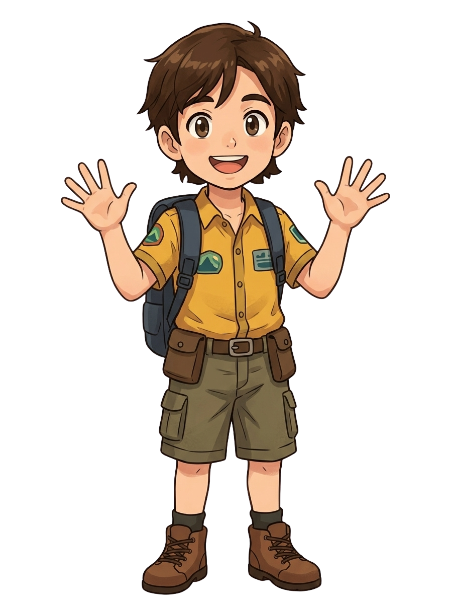

Tentang Produk
Jelajah Mojokerto merupakan media pembelajaran berbasis gamifikasi yang mengajak siswa mengenal budaya dan kearifan lokal Mojokerto melalui petualangan, misi, dan aktivitas interaktif.
Siswa dapat menjelajahi berbagai tempat, menyelesaikan misi, memperoleh pengalaman belajar, dan mengenal budaya Mojokerto dengan cara yang lebih menyenangkan.

Cara Bermain
Ikuti petualanganmu dan kenali budaya Mojokerto melalui setiap misi.
Jelajahi
Temukan berbagai lokasi dan budaya yang ada di Mojokerto.
Selesaikan Misi
Kerjakan berbagai tantangan dan aktivitas pada setiap lokasi.
Naik Level
Kumpulkan poin, selesaikan misi, dan buka lokasi berikutnya.
Jelajahi Mojokerto
Temukan berbagai lokasi dalam petualanganmu.

Candi

Pasar

Sawah

Sungai